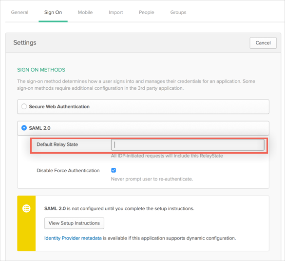

Send an email message to Pivotal Tracker at tracker@pivotal.io and request that they enable SAML 2.0 for your organization.
Include the following with your request:
IDP Metadata: Copy and paste the following:
Sign in to Okta Admin app to have this variable generated for you.
Pivotal Tracker will process your request and will provide you with a Default Relay State.
In Okta, select the Sign On tab for the Pivotal Tracker app, then click Edit.
Enter the Default Relay State into the corresponding field, in the following format:
{"account_id":######}
Click Save.

Done!
Notes:
IdP-initiated flows and SP-initiated flows are supported.
Just In Time (JIT) provisioning is not supported.